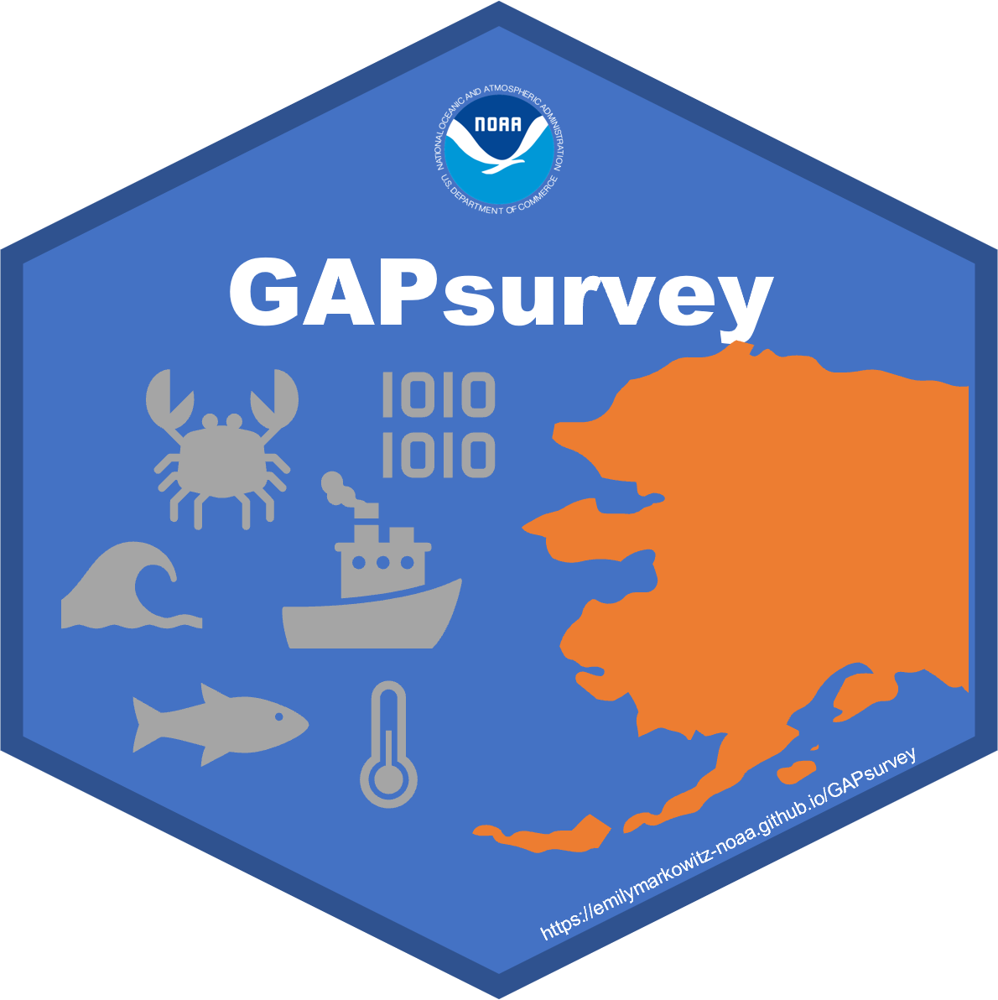

Example GAPsurvey Go-to script
GAPsurvey-script.RmdInstall R package —
Rerun this only when there is a new version of the package to
install. The user may install from GitHub:
devtools::install_github("afsc-gap-products/GAPsurvey")or install from local file .tar.gz:
# example, the user may have a different path
install.packages('C:/Users/User/Downloads/GAPsurvey_2026.04.14.tar.gz',
repos=NULL, type='source')Open this example GAPsurvey script (for reference)
—
This should already be located on desktop, otherwise find it using the link below.
system.file("r/GAPsurvey_script.R", package = "GAPsurvey")What have we historically caught at this station? —
Learn more:
?get_catch_haul_historyExamples:
For one year and only 1 station for all species
get_catch_haul_history(
years = 2021:2023, # optional; if you only want to see a specific year, not the last 10
species_codes = c(21720, 21740), # optional; pacific cod and walleye pollock ONLY
survey = "EBS", # for example
station = "I-13") # for exampleFor default 10 years and nearby stations for all species (a typical use-case)
get_catch_haul_history(
survey = "AI",
station = "324-73",
grid_buffer = 3)All catch data —
You can also look through all catch data from the survey
?GAPsurvey::public_data
# GAPsurvey::public_data
head(GAPsurvey::public_data) # using `head()` function to see first few (6) rows of dataset
#> year srvy survey survey_definition_id cruise cruisejoin haul hauljoin
#> 1 2005 GOA Gulf of Alaska 47 200501 -608 1 -12880
#> 2 2005 GOA Gulf of Alaska 47 200501 -608 1 -12880
#> 3 2005 GOA Gulf of Alaska 47 200501 -608 1 -12880
#> 4 2005 GOA Gulf of Alaska 47 200501 -608 1 -12880
#> 5 2005 GOA Gulf of Alaska 47 200501 -608 1 -12880
#> 6 2005 GOA Gulf of Alaska 47 200501 -608 1 -12880
#> stratum station vessel_id vessel_name date_time latitude_dd_start
#> 1 210 3-6 143 SEA STORM 2005-05-21 15:34:16 52.55793
#> 2 210 3-6 143 SEA STORM 2005-05-21 15:34:16 52.55793
#> 3 210 3-6 143 SEA STORM 2005-05-21 15:34:16 52.55793
#> 4 210 3-6 143 SEA STORM 2005-05-21 15:34:16 52.55793
#> 5 210 3-6 143 SEA STORM 2005-05-21 15:34:16 52.55793
#> 6 210 3-6 143 SEA STORM 2005-05-21 15:34:16 52.55793
#> longitude_dd_start latitude_dd_end longitude_dd_end bottom_temperature_c
#> 1 -169.7829 52.571 -169.791 NA
#> 2 -169.7829 52.571 -169.791 NA
#> 3 -169.7829 52.571 -169.791 NA
#> 4 -169.7829 52.571 -169.791 NA
#> 5 -169.7829 52.571 -169.791 NA
#> 6 -169.7829 52.571 -169.791 NA
#> surface_temperature_c depth_m species_code itis worms common_name
#> 1 6.1 219 10110 172862 279792 arrowtooth flounder
#> 2 6.1 219 10120 172932 274290 Pacific halibut
#> 3 6.1 219 20720 170949 254513 searcher
#> 4 6.1 219 21341 167305 254406 darkfin sculpin
#> 5 6.1 219 21354 167374 254531 spectacled sculpin
#> 6 6.1 219 21720 164711 254538 Pacific cod
#> scientific_name id_rank cpue_kgkm2 cpue_nokm2 count weight_kg
#> 1 Atheresthes stomias species 578.777295 866.54118 24 16.030
#> 2 Hippoglossus stenolepis species 593.580706 36.10588 1 16.440
#> 3 Bathymaster signatus species 8.015506 72.21176 2 0.222
#> 4 Malacocottus zonurus species 59.791341 397.16471 11 1.656
#> 5 Triglops scepticus species 202.048518 1769.18824 49 5.596
#> 6 Gadus macrocephalus species 6863.367181 2238.56471 62 190.090
#> taxon_confidence area_swept_km2 distance_fished_km duration_hr net_width_m
#> 1 High 0.02769632 1.586 0.281 17.463
#> 2 High 0.02769632 1.586 0.281 17.463
#> 3 High 0.02769632 1.586 0.281 17.463
#> 4 High 0.02769632 1.586 0.281 17.463
#> 5 High 0.02769632 1.586 0.281 17.463
#> 6 High 0.02769632 1.586 0.281 17.463
#> net_height_m performance
#> 1 7.301 0
#> 2 7.301 0
#> 3 7.301 0
#> 4 7.301 0
#> 5 7.301 0
#> 6 7.301 0Species Data —
You can also use this to find all species and species codes for quick searching
?GAPsurvey::species_data
# GAPsurvey::species_data
head(GAPsurvey::species_data) # using `head()` function to see first few (6) rows of dataset
#> species_code common_name scientific_name
#> 1 10141 Bering flounder (juvenile) Hippoglossoides robustus (juvenile)
#> 2 10145 diamond turbot Pleuronichthys guttulatus
#> 3 10150 slender sole Lyopsetta exilis
#> 4 10155 Arctic flounder Liopsetta glacialis
#> 5 10160 petrale sole Eopsetta jordani
#> 6 10170 English sole Parophrys vetulusSpecies Polycorder reference —
You can also use this to find all species and species codes for quick searching
?GAPsurvey::PolySpecies
# GAPsurvey::PolySpecies
head(GAPsurvey::PolySpecies) # using `head()` function to see first few (6) rows of dataset
#> SPECIES_CODE POLY_SPECIES_CODE SPECIES_NAME COMMON_NAME
#> 1 232 147 Lamna ditropis salmon shark
#> 2 310 1 Squalus suckleyi spiny dogfish
#> 3 320 121 Somniosus pacificus Pacific sleeper shark
#> 4 410 120 Bathyraja abyssicola deepsea skate
#> 5 420 2 Beringraja binoculata big skate
#> 6 435 3 Bathyraja interrupta Bering skateWhat time is sunrise and sunset? —
Learn more:
?get_sunrise_sunsetExamples:
Find times based on lat/lon for today’s date, where date is a date object
get_sunrise_sunset(chosen_date = Sys.Date(),
latitude = 63.3,
longitude = -170.5)
#> Using latitude and longitude to calcualte sunrise and sunset.
#> Sunrise is at 2026-04-14 07:56:00 AKDT
#> Sunset is at 2026-04-13 22:47:00 AKDTFind times based on lat/lon for today’s date, where date is a character and lat/lon in degree decimal-minutes
get_sunrise_sunset(chosen_date = "2023-06-05",
latitude = "63 18.0",
longitude = "-170 30.0")
#> Using latitude and longitude to calcualte sunrise and sunset.
#> Sunrise is at 2023-06-05 05:19:00 AKDT
#> Sunset is at 2023-06-05 01:13:00 AKDTFind times based on a survey (AI) station’s recorded lat/lon for today’s date
get_sunrise_sunset(chosen_date = "2025-06-10",
survey = "AI",
station = "8-55")
#> Using survey station (AI 8-55) centroid location information (lat = 53.371, lon = 170.561) to calculate sunrise and sunset.
#> Sunrise is at 2025-06-10 08:10:00 AKDT
#> Sunset is at 2025-06-10 01:04:00 AKDTFind times based on a survey (GOA) station’s recorded lat/lon for today’s date
get_sunrise_sunset(chosen_date = Sys.Date(),
survey = "GOA",
station = "264-18-511")
#> Using survey station (GOA 264-18-511) centroid location information (lat = 52.351, lon = -169.964) to calculate sunrise and sunset.
#> Sunrise is at 2026-04-14 08:24:00 AKDT
#> Sunset is at 2026-04-13 22:15:00 AKDTFind times based on a survey (EBS) station’s recorded lat/lon for today’s date
get_sunrise_sunset(chosen_date = "2025-08-04",
survey = "EBS",
station = "P-31")
#> Using survey station (EBS P-31) centroid location information (lat = 60, lon = -177.356) to calculate sunrise and sunset.
#> Sunrise is at 2025-08-04 07:38:00 AKDT
#> Sunset is at 2025-08-04 00:12:00 AKDTFind times based on a survey (NBS) station’s recorded lat/lon for today’s date
get_sunrise_sunset(chosen_date = "2025-06-04",
survey = "NBS",
station = "ZZ-01")
#> Using survey station (NBS ZZ-01) centroid location information (lat = 63.334, lon = -168.244) to calculate sunrise and sunset.
#> Sunrise is at 2025-06-04 05:14:00 AKDT
#> Sunset is at 2025-06-04 01:08:00 AKDTConvert CTD data to BTD as a backup for SBE39 (aka ‘the BT’) —
This function converts a CTD hexadecimal (.hex) file to bathythermic data (.btd) and bathythermic header files (.bth). If you are unable to convert your file, please contact sean.rohan@@noaa.gov.
?convert_ctd_btdExamples:
convert_ctd_btd(
filepath_hex = system.file(paste0("exdata/convert_ctd_btd/",
"2021_06_13_0003.hex"), package = "GAPsurvey"),
filepath_xmlcon = system.file(paste0("exdata/convert_ctd_btd/",
"19-8102_Deploy2021.xmlcon"), package = "GAPsurvey"),
latitude = 55,
VESSEL = 94,
CRUISE = 202101,
HAUL = 107,
MODEL_NUMBER = 1,
VERSION_NUMBER = 1,
SERIAL_NUMBER = 8105)BVDR Conversion to Create BTD data —
Converts Marport BVDR data (.ted and .tet files from Marport headrope sensor) to .BTD format. You must first run the BVDR converter program (convert_bvdr.exe) to convert the Marport .bvdr files into .ted and .tet files that can be pulled into R. The BVDR program and instructions can be found in the RACE Survey App. You will have to create your own .SGT file using the example in the BVDR instruction file with start and end time (be sure to include a carriage return after your (second and) final row of data!), because this is not a file that our current systems creates. Once you have used the BVDR converter to output the .ted and .tet files you are ready to use the convert_ted_btd() function here!
This will return .BTH and .BTD files to the path_out directory.
Learn more:
?convert_ted_btdExample:
# example input files
readLines(system.file("exdata/convert_bvdr_btd/201901_94_0003.ted",
package = "GAPsurvey"))[1:5]
readLines(system.file("exdata/convert_bvdr_btd/201901_94_0003.tet",
package = "GAPsurvey"))[1:5]
readLines(system.file("exdata/convert_bvdr_btd/201901_94_0003.teh",
package = "GAPsurvey"))[1:5]
# run function
convert_ted_btd(
VESSEL = 94,
CRUISE = 201901,
HAUL = 3,
MODEL_NUMBER = 123,
VERSION_NUMBER = 456,
SERIAL_NUMBER = 789,
path_in = system.file("exdata/convert_bvdr_btd/", package = "GAPsurvey"),
path_out = getwd(),
filename_add = "newted")
# example output files
readLines(system.file("exdata/convert_bvdr_btd/HAUL0003_newted.BTD",
package = "GAPsurvey"))[1:5]
readLines(system.file("exdata/convert_bvdr_btd/HAUL0003_newted.BTH",
package = "GAPsurvey"))[1:5]Recover position data from Globe .log file —
In the event that the MARPORT server GPS fails or is incomplete, “convert_log_gps()” converts GLOBE LOG files into a format that can be uploaded into WHEELHOUSE. To get a .log file that is usable in this function, 1) Go the C: globe logs 2018 directory and choose GLG file with proper date 2) Use GLOBE Files>Logs> to convert .GLG (binary) to a .LOG (.csv) file 3) convert_log_gps()will prompt you for Vessel code, Cruise no., Haul no. and Date 4) The final prompt will ask for the location of the GLOBE LOG file 5) convert_log_gps()will create csv file in the R directory with filename “new.gps” 6) Rename “new.gps” to HAULXXXX.GPS where XXXX is the haul number 7) Upload HAULXXXX.GPS into WHEELHOUSE 8) NOTE: The raw GLOBE log data are in GMT time (-8 hrs or 4PM AKDT prior day to 4PM current day. Hence if haul with missing GPS spans the 4PM hour (e.g.,3:45-4:30 PM),YOU WILL HAVE TO CONVERT TWO GLG files (current day and next day)and run convert_log_gps()twice & manually combine the two GPS files 9) ALSO NOTE: You may have to shut down GLOBE or wait until after 4pm on following day before all the incoming NMEA data are written to the GLG file.
Now that you have a .log file, you can RUN the function by putting your cursor on the “convert_log_gps()” line below & press CTRL+R.
Returns a .GPS file to the path_out directory with DATE/TIME in AKDT.
Learn more:
?convert_log_gpsExample:
# example input file
readLines(system.file("exdata/convert_log_gps/06062017.log",
package = "GAPsurvey"))[1:5] # input file
# use function
convert_log_gps(
VESSEL = 94,
CRUISE = 201901,
HAUL = 3,
DATE = "06/06/2017",
path_in = system.file("exdata/convert_log_gps/06062017.log",
package = "GAPsurvey"),
path_out = getwd(),
filename_add = "newlog")
# example output file
readLines(system.file("exdata/convert_log_gps/HAUL0003_newlog.gps",
package = "GAPsurvey"))[1:5] # output fileConvert .bvdr files to .marp files —
If you mistakenly delete the marport data for a haul, you can retrieve that data through this converter.
Before using this script, 1. Open the .bvdr file in Notepad ++ or a similar text editor. 2. Find the uninterpretable character symbol. Often, depending on the editor, this will look like a box or the highlighted letters “SUB”. Find and delete (via replace) these characters for the whole document. An error will appear and only part of the file will be read (stopping at the line before where this unsupported symbol is) if you do not edit the data ahead of time. 3. Save the .bvdr file with these changes and use the link to that file below for path_bvdr For an example of what a proper .marp file looks like, refer to system.file(“exdata/convert_bvdr_marp/HAUL0001.marp”, package = “GAPsurvey”)
Learn more:
?convert_log_gpsExample:
# example input file
readLines(system.file("exdata/convert_bvdr_marp/20220811-00Za.bvdr",
package = "GAPsurvey"))[1:5] # input file
# see what example input file looks like
head(convert_bvdr_marp(
path_bvdr = system.file("exdata/convert_bvdr_marp/20220811-00Za.bvdr",
package = "GAPsurvey"),
verbose = TRUE), 20)
# use function
convert_bvdr_marp(
path_bvdr = system.file("exdata/convert_bvdr_marp/20220811-00Za.bvdr",
package = "GAPsurvey"))
# example output file
readLines(system.file("exdata/convert_bvdr_marp/20220811-00Za.marp",
package = "GAPsurvey")) # output file